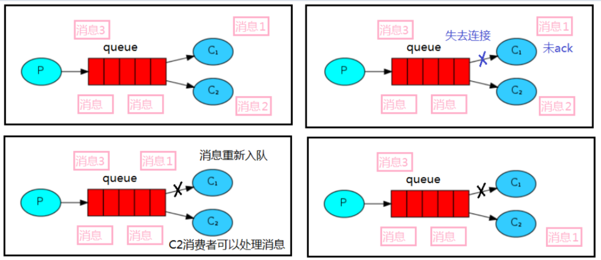

RabbitMQ 1. MQ 1.1 什么是MQ MQ(message queque)，即消息队列，本质上是个队列，是一种跨进程的通信机制，用于上下游传递信息。在互联网架构中，MQ是一种非常常见的上下游“逻辑解耦+物理解耦”的信息通信服务。使用了MQ之后，信息发送上游只需要依赖MQ，不用依赖其他服务
1.2 为什么需要MQ 1. 流量消峰 使用消息队列做缓冲，可以有效应对流量顶峰，把集中的订单分散成一段时间来处理，优于全部不能处理。
2. 应用解耦 采用基于消息队列的方式，可以减少系统间相互调用的问题。如某一系统出现故障，可以把需要处理的内容缓存在消息队列中，待系统恢复后继续处理，提升系统的可用性。
3. 异步处理 一些服务间调用是异步的，需要花很长的时间执行。如果使用消息总线，可以很方便的解决这个问题。比如，当A调用B的服务后，只需要监听B处理完成的信息，当B处理完成后，会发送消息给MQ，MQ会把消息转发给A服务，这样的话A服务无需循环调用B服务，还能及时得到异步处理成功的信息
1.3 MQ的分类
ActiveMQ –最早的MQ
优点：单机吞吐量万级，时效性ms级，可用性高，基于主从架构实现高可用性，消息可靠性较低的概率丢失数据
缺点：官方社区维护较少，高吞吐量场景较少使用
Kafka –大数据杀手锏
谈到大数据领域内的信息传输，绕不开Kafka，这款为大数据而生的消息中间件，以其百万级TPS的吞吐量名声大噪，迅速成为大数据领域的宠儿，在数据采集、传输、存储的过程中发挥着举足轻重的作用。目前已经被LinkedIn，Uber，Twitter，Netflix等大公司所采纳。
优点：性能卓越，单机写入TPS约在百万条/秒，最大的优点就是吞吐量高。时效性ms级可用心个非常高，kafka是分布式的，一个数据多个副本，少数机器宕机，不会丢失数据，不会导致不可用，消费者采用Pull方式获取消息，消息有序，通过控制能够保证所有消息被消费且仅被消费一次；有优秀的第三方Kafka Web管理界面Kafka-Manager；在日志领域比较成熟，被多家公司和多个开源项目使用；功能支持：功能较为简单，主要支持简单的MQ功能，在大数据领域的实时计算以及日志采集被大规模使用
缺点：Kafka单机超过64个队列/分区，Load会发生明显的飙高现象，队列越多，Load越多，发送消息响应时间变长，使用短轮询方式，实时性取决于轮询间隔时间，消费失败不支持重试；支持消息顺序，但是一台代理宕机后，就会发生消息乱序，社区更新较慢
RocketMQ
RocketMQ出自阿里巴巴的开源产品，用Java语言实现，在设计时参考了Kafka，并作出了自己的一些改进，被阿里巴巴广泛应用在订单，交易，充值，流计算，消息推送，日志流式处理，binglog分发等场景。
优点：单机吞吐量十万级，可用性非常高，分布式架构，消息可以做到0丢失，MQ功能较为完善，还是分布式的，扩展性好，支持10亿级别的消息堆积，不会因为堆积导致性能下降，源码是Java，我们可以自己阅读源码，定制自己的MQ
缺点：支持的客户端语言不多，目前是Java及C++，其中C++不成熟；社区活跃度一般，没有在MQ核心中去实现JMS等接口，有些系统要迁移需要修改大量代码。
RabbitMQ
2007年发布，是一个在AMQP（高级消息队列协议）基础上完成的，可复用的企业消息系统，是当前最主流的消息中间件之一。
优点：由于erlang语言的高并发特性，性能较好；吞吐量到万级，MQ功能比较完备，健壮、稳定、易用、跨平台、支持多种语言 如：Python、Ruby、.net、Java、JMS、C、PHP、ActionScript、XMPP、STOMP等，支持AJAX文档齐全；开源提供的管理界面非常棒用起来很好用，社区活跃度高；更新频率相当高
缺点：商业版需要收费，学习成本较高
1.4 MQ的选择 2. RabbitMQ 2.1 基本概念 RabbitMQ是一个消息中间件，它负责接收并转发信息，并不处理消息
2.2 四大核心概念
生产者：产生数据发送信息的程序是生产者
交换机：交换机是RabbitMQ非常重要的一个部件，一方面它接收来自生产者的信息，另一方面它将消息推送到队列中。交换机必须确切知道如何处理它接收到的信息，是将这些消息推送到制定队列还是推送到多个队列，亦或是把消息丢弃，这些都由交换机的类型决定
队列：RabbitMQ内部使用的一种个数据结构，尽管消息流经RabbitMQ和应用程序，但它们只能存储在队列中。队列仅受主机的内存和磁盘限制的约束，本质上是一个大的消息缓冲区。许多生产者可以将消息发送到一个队列，许多消费者可以尝试从一个队列接收数据。这就是我们使用队列的方式
消费者：大多数时候，消费者是一个等待接收信息的程序。很多时候，消费者和信息中间件并不再同一台机器上。同一个应用程序既可以是生产者又可以是消费者。
2.3 RabbittMQ核心部分
2.4 关键词介绍
Broker：接收和分发消息的应用，RabbitMQ Server就是Message Broker
Virtual host：出于多租户和安全因素设计的，把AMQP的基本组件划分到一个虚拟的分组中，类似于网络中的namespace概念。当多个不同的用户使用同一个RabbitMQ Server提供的服务时，可以划分出多个vhost，每个用户在自己的vhost创建exchange/queue等
Connection：Publisher / Consumer / Broker 之间的TCP连接
Channel：如果每一次访问RabbitMQ都建立一个Connection，在消息量打的时候建立TCP Connection的开销僵尸巨大的，效率也较低。Channel是在Connection内部建立的逻辑连接，如果应用程序支持多线程，通常每个thread创建单独的channel进行通讯，AMQP method包含了channel id帮助客户端和message broker识别channel，所以channel之间是完全隔离的。Channel作为轻量级的Connection极大减少了操作系统建立TCP Connection的开销
Exchange：message到达broker的第一站，匹配查询表中的routing key，分发消息到queue中去。常用的类型有：direct(point-to-point),topic(publish-subscribe),fanout(multicast)
Queue：消息最终被送到这里等待consumer取走
Binding：exchange和queue之间的虚拟连接，binding中可以包含routing key，Binding信息被保存到exchange中的查询表中，用于message的分发依据
3. 基本操作 3.1 安装依赖 由于yum源一般不是最新版，需从官网下载安装包手动安装
建议安装在统一路径下，如/usr/local/software
1 2 3 rpm -ivh erlang~~.rpm yum -y install socat rpm -ivh rabbitmq-server~~.noarch.rpm
3.2 基本命令 添加开启自启动
1 chcconfig rabbitmq-server on
启动服务
1 systemctl start rabbitmq-server
查看服务状态
1 systemctl status rabbitmq-server
停止服务
1 systemctl stop rabbitmq-server
开启web管理插件 使用此插件远程访问需开放端口15672和5672
1 rabbitmq-plugins enable rabbitmq_management
web管理地址：http:// + 服务器ip + 端口(默认15672)
默认账户：guest guest 无权限
添加新用户
1 rabbitmqctl add_user admin 123
设置用户角色
1 rabbitmqctl set_user_tags admin administrator
设置用户权限
1 set_permissions [-p <vhostpath>] <user> <conf> <write> <read>
授予admin对/vhost1 中所有资源的配置、读、写权限
1 rabbitmqctl set_permissions -p "/" admin ".*" ".*" ".*"
查看当前所有用户和角色
4. Work Queues -工作队列 工作队列（又称任务队列）的主要思想是避免立即执行资源密集型任务，而不得不等待它完成。相反我们安排任务在之后执行。我们把任务封装为消息并将其发送到队列。在后台运行的工作进程将弹出任务并最终执行作业。当有多个工作线程时，这些工作线程将一起处理这些任务。
4.1 轮询处理消息 消费者有序接收生产者发送的消息
4.2 自动应答 消息发送后立即被认为已经传送成功，这种模式在高吞吐量和数据传输安全性方面做权衡，因为这种模式如果消息在·接收到之前，消费者那边出现连接或者channel关闭，那么消息就丢失了，当然另一方面这种模式消费者那边可以传递过载的消息，没有对传递的消息数量进行限制，当然这样有可能使得消费者这边由于接收太多还来不及处理的消息，导致这些消息的积压，最终使得内存耗尽，最终这些消费者线程被操作系统杀死，所以这种模式仅适用于在消费者可以高效并以某种速率能够处理这些消息的情况下使用
4.3 手动应答 用于肯定确认 RabbitMQ已知消息被成功处理，可以丢弃了
用于否定确认 不处理消息了直接拒绝，可以丢弃了
1 2 Channel.basicNack(); Channel.basicReject(); 相较于上少一个参数
4.4 Multiple 是否批量处理channel上未应答的消息
true 所有channel上未应答的消息都会被确认收到消息应答
false 只应答对应tag的消息
4.5 消息重新入队 如果消费者由于某些原因失去连接(其通道已关闭，连接已关闭或 TCP 连接丢失)，导致消息
未发送 ACK 确认，RabbitMQ 将了解到消息未完全处理，并将对其重新排队。如果此时其他消费者
可以处理，它将很快将其重新分发给另一个消费者。这样，即使某个消费者偶尔死亡，也可以确
保不会丢失任何消息。

5. RabbitMQ持久化 5.1 概念 默认情况下 RabbitMQ 退出或由于某种原因崩溃时，它忽视队列
和消息，除非告知它不要这样做。确保消息不会丢失需要做两件事：我们需要将队列和消息都标
记为持久化。
5.2 队列实现持久化 如果要队列实现持久化，只需要在声明队列的时候把durable参数设置为持久化
注：如果之前声明的同一个队列不是持久化的，那么需要把原先的队列先删除，再重新创建一个持久化的队列，否则就会出现错误
5.3 消息实现持久化 要想让消息实现持久化需要在消息生产者修改代码，添加MessageProperties.PERSISTENT_TEXT_PLAIN 属性。
将消息标记为持久化并不能完全保证不会丢失消息。尽管它告诉 RabbitMQ 将消息保存到磁盘，但是这里依然存在当消息刚准备存储在磁盘的时候 但是还没有存储完，消息还在缓存的一个间隔点。此时并没有真正写入磁盘。持久性保证并不强，但是对于我们的简单任务队列而言，这已经绰绰有余了。如有需要可以使用
5.4 不公平分发 分发消息的轮询分发，在消费者处理任务速度相同的场景下是非常合适的。但是在其他场景下，比如一个消费者的处理任务速度显著高于其他消费者时，就是不合理的。如果所有的消费者都没有完成手上任务，队列还在不停的添加新任务，队列有可能就会遇到队列被撑满的情况，这个时候就只能添加新的 worker 或者改变其他存储任务的策略。
为了避免这种情况，可以在手动应答模式下为多个消费者统一设置参数channel.basicQos(1)，该参数默认值为0，即预取值为0，每个消费者都不预取消息。
5.5 预期值 消息的发送是异步的，所以在任何时候，channel 上肯定不止只有一个消息。另外来自消费者的手动确认本质上也是异步的。因此这里就存在一个未确认的消息缓冲区，因此开发人员希望能限制此缓冲区的大小，以避免缓冲区里面无限制的未确认消息问题。此时就可以通过使用 basic.Qos 方法设置“预取计数”值来完成的。
该值定义通道上允许的未确认消息的最大数量。一旦数量达到配置的数量，RabbitMQ 将停止在通道上传递更多消息，除非至少有一个未处理的消息被确认，例如，假设在通道上有未确认的消息 5、6、7，8，并且通道的预取计数设置为 4，此时 RabbitMQ 将不会在该通道上再传递任何消息，除非至少有一个未应答的消息被 ack。比方说 tag=6 这个消息刚刚被确认 ACK，RabbitMQ 将会感知这个情况到并再发送一条消息。消息应答和 QoS 预取值对用户吞吐量有重大影响。通常，增加预取将提高向消费者传递消息的速度。
虽然自动应答传输消息速率是最佳的，但是在这种情况下已传递但尚未处理的消息的数量也会增加，从而增加了消费者的RAM消耗(随机存取存储器)。应该小心使用具有无限预处理的自动确认模式或手动确认模式，消费者消费了大量的消息如果没有确认的话，会导致消费者连接节点的内存消耗变大，所以找到合适的预取值是一个反复试验的过程，不同的负载该值取值也不同 100 到 300 范围内的值通常可提供最佳的吞吐量，并且不会给消费者带来太大的风险。预取值为 1 是最保守的。当然这将使吞吐量变得很低，特别是消费者连接延迟很严重的情况下，特别是在消费者连接等待时间较长的环境中。对于大多数应用来说，稍微高一点的值将是最佳的。
6. 发布确认 生产者将信道设置成 confirm 模式，一旦信道进入 confirm 模式，所有在该信道上面发布的
消息都将会被指派一个唯一的 ID(从 1 开始)，一旦消息被投递到所有匹配的队列之后，broker
就会发送一个确认给生产者(包含消息的唯一 ID)，这就使得生产者知道消息已经正确到达目的队
列了，如果消息和队列是可持久化的，那么确认消息会在将消息写入磁盘之后发出，broker 回传
给生产者的确认消息中 delivery-tag 域包含了确认消息的序列号，此外 broker 也可以设置
basic.ack 的 multiple 域，表示到这个序列号之前的所有消息都已经得到了处理。
confirm 模式最大的好处在于他是异步的，一旦发布一条消息，生产者应用程序就可以在等信
道返回确认的同时继续发送下一条消息，当消息最终得到确认之后，生产者应用便可以通过回调
方法来处理该确认消息，如果 RabbitMQ 因为自身内部错误导致消息丢失，就会发送一条 nack 消
息，生产者应用程序同样可以在回调方法中处理该 nack 消息。
6.1 开启发布确认 发布确认默认是关闭的，如果需要开启可以调用方法confirmSelect。每次想使用发布确认时，都需要才channel上调用该方法
1 2 Channel channel = connection.createChannl(); channel.confirmSelect();
6.2 单个确认发布 这是一种简单的确认方式，它是一种同步确认发布的方式，只有一个消息发布后被确认发布，后续的消息才能继续发布,waitForConfirmsOrDie(long)这个方法只有在消息被确认的时候才返回，如果在指定时间范围内这个消息没有被确认那么它将抛出异常。
这种确认方式有一个最大的缺点就是发布速度特别的慢，因为如果没有确认发布的消息就会阻塞所有后续消息的发布，这种方式最多提供每秒不超过数百条发布消息的吞吐量。当然对于某些使用场景来说这可能已经足够了。
1 2 3 4 5 6 7 8 for (int i = 0 ; i < MESSAGE_COUNT; i++) { String message = i + "" ; channel.basicPublish("" ,queueName,null ,message.getBytes()); boolean flag = channel.waitForConfirms(); if (flag) System.out.println("消息发送成功" ); }
6.3 批量确认发布 单个确认发布是非常慢的，与单个等待确认消息相比，先发布一批消息然后一起确认可以极大地
提高吞吐量，但是这种方式也有一个缺点：当发生故障导致发布出现问题时，不知道是哪个消息出现
问题了，为此我们必须将整个批处理保存在内存中，以记录重要的信息而后重新发布消息。当然这种
方案仍然是同步的，也一样阻塞消息的发布。
1 2 3 4 5 6 7 8 9 10 11 12 13 14 15 int batchSize = 100 ;for (int i = 0 ; i < MESSAGE_COUNT; i++) { String message = "消息" +i; channel.basicPublish("" ,queueName,null ,message.getBytes()); if (i%batchSize==0 ) { channel.waitForConfirms(); } }
6.4 异步确认发布 异步确认虽然编程逻辑比前两个要复杂，但是性价比最高，无论是可靠性还是效率都没得说，
它是利用回调函数来达到消息可靠性传递的，这个中间件也是通过函数回调来保证是否投递成功，
1 2 3 4 5 6 7 8 9 10 11 12 13 14 15 16 17 18 ConfirmCallback ackCallback = (deliveryTag,multiple) -> { System.out.println("确认的消息：" +deliveryTag); }; ConfirmCallback nackCallback = (deliveryTag, multiple) -> { System.out.println("未确认的消息：" +deliveryTag); }; channel.addConfirmListener(ackCallback,nackCallback);
6.5 如何处理异步未确认消息· 最好的解决方案就是把未确认的消息放到一个基于内存的能被发布线程访问的队列，
比如说用 ConcurrentLinkedQueue 这个队列在 confirm callbacks 与发布线程之间进行消息的传
递。
6.6 3种发布确认速度对比
单独发布消息：同步等待确认，简单，但吞吐量非常有限。
批量发布消息：批量同步等待确认，简单合理的吞吐量，但一旦出现问题很难推断出是哪条消息出现了问题。
异步处理：最佳性能和资源使用，在出现错误的情况下可以很好地控制，但是实现起来比较复杂
7. 交换机 工作队列背后，每个任务都恰好交付给一个消费者(工作进程)。假如需要将消息传达给多个消费者。就需要 ”发布/订阅“模式
7.1 Exchanges 7.1.1 Exchanges概念 RabbitMQ 消息传递模型的核心思想是: 生产者生产的消息从不会直接发送到队列。实际上，通常生产
者甚至都不知道这些消息传递传递到了哪些队列中。生产者只能将消息发送到交换机(exchange).
交换机工作的内容非常简单，一方面它接收来自生产者的消息，另一方面将它们推入队列。交换机必须确切知道如何处理收到的消息，是把这些消息放到特定队列还是放到许多队列中还是丢弃。这就由交换机的类型来决定。
7.1.2 Exchanges的类型
direct
topic
headers
fanout
7.1.3 无名exchange 使用空字符串表示使用默认交换机，消息能路由发送到队列中其实是由 routingKey(bindingkey)绑定 key 指定的，如果它存在的话
1 channel.basicPublish("" ,"test_que" ,null ,message.getBytes());
7.2 临时队列 每当我们连接到RabbitMQ时，都需要一个全新的空队列，为此我们可以创建一个具有随机名称
的队列，或者能让服务器为我们选择一个随机队列名称。一旦断开了消费者的连接，队列就会被自动删除。
通过不指定队列名的方式可以创建临时队列
1 String queueName = channel.queueDeclare().getQueue()
7.3 绑定（bindings） binding就是exchange和queue之间的桥梁，他告诉我们exchange和那个队列进行了绑定关系。
7.4 Fanout 7.4.1 Fanout介绍 Fanout这种类型非常简单，它是将接收到的所有消息广播到它知道的所有队列中，系统中默认存在这种类型的交换机
7.4.2 Fanout实战
生产者
1 2 3 4 5 6 7 8 9 10 11 12 13 14 15 16 17 18 public class EmitLog public static final String EXCHANGE_NAME = "logs" ; public static void main (String[] args) throws Exception Channel channel = RabbitMqUtils.getChannel(); channel.exchangeDeclare(EXCHANGE_NAME,"fanout" ); Scanner scanner = new Scanner(System.in); while (scanner.hasNext()){ String message = scanner.next(); channel.basicPublish(EXCHANGE_NAME,"" ,null ,message.getBytes("UTF-8" )); System.out.println("生产者发出消息：" +message); } } }
消费者
1 2 3 4 5 6 7 8 9 10 11 12 13 14 15 16 17 18 19 20 21 22 23 24 25 26 27 28 29 30 public class ReceiveLogs01 /ReceiveLogs02 public static final String EXCHANGE_NAME = "logs" ; public static void main (String[] args) throws Exception Channel channel = RabbitMqUtils.getChannel(); channel.exchangeDeclare(EXCHANGE_NAME, "fanout" ); String queueName = channel.queueDeclare().getQueue(); channel.queueBind(queueName, EXCHANGE_NAME, "" ); System.out.println("等待接收消息，把接收到的消息打印在屏幕上......" ); DeliverCallback deliverCallback = (consumerTag, message) -> { System.out.println("ReceiveLogs01控制台打印接收到的消息：" + new String(message.getBody(), "UTF-8" )); }; channel.basicConsume(queueName, true , deliverCallback, consumerTag -> { }); } }
7.5 Direct exchange 绑定是交换机和队列之间的桥梁关系，队列只对它绑定的交换机的消息感兴趣.绑定用参数：routingKey 来表示也可称该参数为 binding key，使用channel.queueBind(queueName, EXCHANGE_NAME, “routingKey”)创建绑定，绑定之后的意义由其交换类型决定
7.5.1 Direct exchange介绍 Fanout 这种交换类型并不能给我们带来很大的灵活性-它只能进行无意识的广播，可以使用 direct 这种类型来进行替换，在这种类型的工作方式下，消息只会去到它绑定的routingKey 队列中。
7.5.2 多重绑定 在direct绑定类型下，exchange可以绑定多个routingkey，但如果每个队列的key都是相同的，那么这种效果和fanout其实是一致的
7.5.3 Direct Exchange实战
生产者
1 2 3 4 5 6 7 8 9 10 11 12 13 14 15 16 17 18 19 20 21 22 public class DirectLogs public static final String EXCHANGE_NAME = "direct_logs" ; public static void main (String[] args) throws Exception Channel channel = RabbitMqUtils.getChannel(); channel.exchangeDeclare(EXCHANGE_NAME, BuiltinExchangeType.DIRECT); Scanner scanner = new Scanner(System.in); while (scanner.hasNext()) { String message = scanner.next(); channel.basicPublish(EXCHANGE_NAME, "error" , null , message.getBytes("UTF-8" )); System.out.println("生产者发出消息：" + message); } } }
消费者
1 2 3 4 5 6 7 8 9 10 11 12 13 14 15 16 17 18 19 20 21 22 23 24 public class ReceiveLogsDirect01 public static final String EXCHANGE_NAME = "direct_logs" ; public static void main (String[] args) throws Exception Channel channel = RabbitMqUtils.getChannel(); channel.exchangeDeclare(EXCHANGE_NAME, BuiltinExchangeType.DIRECT); channel.queueDeclare("console" , false , false , false , null ); channel.queueBind("console" , EXCHANGE_NAME, "info" ); channel.queueBind("console" , EXCHANGE_NAME, "warning" ); DeliverCallback deliverCallback = (consumerTag, message) -> { System.out.println("ReceiveLogsDirect01控制台打印接收到的消息：" + new String(message.getBody(), "UTF-8" )); }; channel.basicConsume("console" , true , deliverCallback, consumerTag -> { }); } }
1 2 3 4 5 6 7 8 9 10 11 12 13 14 15 16 17 18 19 20 21 22 public class ReceiveLogsDirect02 public static final String EXCHANGE_NAME = "direct_logs" ; public static void main (String[] args) throws Exception Channel channel = RabbitMqUtils.getChannel(); channel.exchangeDeclare(EXCHANGE_NAME, BuiltinExchangeType.DIRECT); channel.queueDeclare("disk" , false , false , false , null ); channel.queueBind("disk" , EXCHANGE_NAME, "error" ); DeliverCallback deliverCallback = (consumerTag, message) -> { System.out.println("ReceiveLogsDirect02控制台打印接收到的消息：" + new String(message.getBody(), "UTF-8" )); }; channel.basicConsume("disk" , true , deliverCallback, consumerTag -> { }); } }
7.6 Topics 尽管相比于fanout，direct提供了比较完善的功能，可以选择性的向队列发送信息，但还是存在一定的局限性，如：需要把info.base和info.advantage发送给不同的队列。这时就可以使用topic类型，有效地解决该问题
7.6.1 Topic 的介绍 发送到类型是 topic 交换机的消息的 routing_key 不能随意写，必须必须是一个单词列表，以点号分隔开。这些单词可以是任意单词，比如说：”stock.usd.nyse”, “nyse.vmw”, “quick.orange.rabbit”这些类型的，单词列表最多不能超过 255 个字节。
在单词列表中，可以使用两种替换符
“*” 代替一个单词
“#” 代替零个或多个单词
案例分析
quick.orange.rabbit 被队列 Q1Q2 接收到
lazy.orange.elephant 被队列 Q1Q2 接收到
quick.orange.fox 被队列 Q1 接收到
lazy.brown.fox 被队列 Q2 接收到
lazy.pink.rabbit 虽然满足两个绑定但只被队列 Q2 接收一次
quick.brown.fox 不匹配任何绑定不会被任何队列接收到会被丢弃
quick.orange.male.rabbit 是四个单词不匹配任何绑定会被丢弃
lazy.orange.male.rabbit 是四个单词但匹配 Q2
注：
当一个队列绑定键是”#”时，这个队列将接收所有消息，等同于fanout
如果队列的绑定键中未出现”*”或者”#”，该队列绑定类型仍是direct
7.6.2 Topic实战
生产者
1 2 3 4 5 6 7 8 9 10 11 12 13 14 15 16 17 18 19 20 21 22 23 24 25 26 27 28 29 30 31 32 33 34 35 36 37 38 39 40 41 42 43 public class EmitLogTopic public static final String EXCHANGE_NAME = "topic_logs" ; public static void main (String[] args) throws Exception Channel channel = RabbitMqUtils.getChannel(); Map<String, String> bindingKeyMap = new HashMap<>(); bindingKeyMap.put("quick.orange.rabbit" , "被队列 Q1Q2 接收到" ); bindingKeyMap.put("lazy.orange.elephant" , "被队列 Q1Q2 接收到" ); bindingKeyMap.put("quick.orange.fox" , "被队列 Q1 接收到" ); bindingKeyMap.put("lazy.brown.fox" , "被队列 Q2 接收到" ); bindingKeyMap.put("lazy.pink.rabbit" , "虽然满足两个绑定但只被队列 Q2 接收一次" ); bindingKeyMap.put("quick.brown.fox" , "不匹配任何绑定不会被任何队列接收到会被丢弃" ); bindingKeyMap.put("quick.orange.male.rabbit" , "是四个单词不匹配任何绑定会被丢弃" ); bindingKeyMap.put("lazy.orange.male.rabbit" , "是四个单词但匹配 Q2" ); for (Map.Entry<String, String> stringEntry : bindingKeyMap.entrySet()) { String routingKey = stringEntry.getKey(); String message = stringEntry.getValue(); channel.basicPublish(EXCHANGE_NAME, routingKey, null , message.getBytes("UTF-8" )); System.out.println("生产者发出消息：" + message); } } }
消费者
1 2 3 4 5 6 7 8 9 10 11 12 13 14 15 16 17 18 19 20 21 22 23 24 25 public class ReceiveLogsTopic01 public static final String EXCHANGE_NAME = "topic_logs" ; public static void main (String[] args) throws Exception Channel channel = RabbitMqUtils.getChannel(); channel.exchangeDeclare(EXCHANGE_NAME, BuiltinExchangeType.TOPIC); String queueName = "Q1" ; channel.queueDeclare(queueName, false , false , false , null ); channel.queueBind(queueName, EXCHANGE_NAME, "*.orange.*" ); System.out.println("等待接收消息....." ); DeliverCallback deliverCallback = (consumerTag, message) -> { System.out.println(new String(message.getBody(), "UTF-8" )); System.out.println("接收队列：" + queueName + " 绑定键：" + message.getEnvelope().getRoutingKey()); }; channel.basicConsume(queueName, true , deliverCallback, consumerTag -> { }); } }
1 2 3 4 5 6 7 8 9 10 11 12 13 14 15 16 17 18 19 20 21 22 23 24 25 26 public class ReceiveLogsTopic02 public static final String EXCHANGE_NAME = "topic_logs" ; public static void main (String[] args) throws Exception Channel channel = RabbitMqUtils.getChannel(); channel.exchangeDeclare(EXCHANGE_NAME, BuiltinExchangeType.TOPIC); String queueName = "Q2" ; channel.queueDeclare(queueName, false , false , false , null ); channel.queueBind(queueName, EXCHANGE_NAME, "*.*.rabbit" ); channel.queueBind(queueName, EXCHANGE_NAME, "lazy.#" ); System.out.println("等待接收消息....." ); DeliverCallback deliverCallback = (consumerTag, message) -> { System.out.println(new String(message.getBody(), "UTF-8" )); System.out.println("接收队列：" + queueName + " 绑定键：" + message.getEnvelope().getRoutingKey()); }; channel.basicConsume(queueName, true , deliverCallback, consumerTag -> { }); } }
8. 死信队列 8.1 死信的概念 死信，顾名思义就是无法被消费的消息，一般来说，producer 将消息投递到 broker 或者直接到 queue 中，然后consumer 从 queue 取出消息进行消费，但某些时候由于特定的原因导致queue中的某些消息无法被消费，这样的消息如果没有后续的处理，就变成了死信，有死信自然就有了死信队列。
应用场景:为了保证订单业务的消息数据不丢失，需要使用到 RabbitMQ 的死信队列机制，当消息
消费发生异常时，将消息投入死信队列中.还有比如说: 用户在商城下单成功并点击去支付后在指定时
间未支付时自动失效
8.2 死信的来源
消息TTL过期
队列达到最大长度，无法再添加数据到mq中
消息被拒绝(basic.reject或basic.nack)并且requeue=false
8.3 死信实战 8.3.1 代码架构图
8.3.2 消息TTL过期 生产者
1 2 3 4 5 6 7 8 9 10 11 12 13 14 15 16 public class Producer public static final String NORMAL_EXCHANGE = "normal_exchange" ; public static void main (String[] args) throws Exception Channel channel = RabbitMqUtils.getChannel(); AMQP.BasicProperties basicProperties = new AMQP.BasicProperties().builder().expiration("10000" ).build(); for (int i = 1 ; i < 11 ; i++) { String message = "info" + i; channel.basicPublish(NORMAL_EXCHANGE, "zhangsan" , basicProperties, message.getBytes()); } } }
消费者
1 2 3 4 5 6 7 8 9 10 11 12 13 14 15 16 17 18 19 20 21 22 23 24 25 26 27 28 29 30 31 32 33 34 35 36 37 38 39 40 41 42 43 44 45 46 public class Consumer01 public static final String NORMAL_EXCHANGE = "normal_exchange" ; public static final String DEAD_EXCHANGE = "dead_exchange" ; public static final String NORMAL_QUEUE = "normal_queue" ; public static final String DEAD_QUEUE = "dead_queue" ; public static void main (String[] args) throws Exception Channel channel = RabbitMqUtils.getChannel(); channel.exchangeDeclare(NORMAL_EXCHANGE, BuiltinExchangeType.DIRECT); channel.exchangeDeclare(DEAD_EXCHANGE, BuiltinExchangeType.DIRECT); Map<String, Object> arguments = new HashMap<>(); arguments.put("x-dead-letter-exchange" , DEAD_EXCHANGE); arguments.put("x-dead-letter-routing-key" , "lisi" ); channel.queueDeclare(NORMAL_QUEUE, false , false , false , arguments); channel.queueDeclare(DEAD_QUEUE, false , false , false , null ); channel.queueBind(NORMAL_QUEUE, NORMAL_EXCHANGE, "zhangsan" ); channel.queueBind(DEAD_QUEUE, DEAD_EXCHANGE, "lisi" ); System.out.println("等待接收消息....." ); DeliverCallback deliverCallback = (consumerTag, message) -> { System.out.println("Consumer01接受的消息是：" + new String(message.getBody(), "UTF-8" )); }; channel.basicConsume(NORMAL_QUEUE, true , deliverCallback, consumerTag -> { }); } }
1 2 3 4 5 6 7 8 9 10 11 12 13 14 15 16 17 18 19 public class Consumer02 public static final String DEAD_QUEUE = "dead_queue" ; public static void main (String[] args) throws Exception Channel channel = RabbitMqUtils.getChannel(); System.out.println("等待接收消息....." ); DeliverCallback deliverCallback = (consumerTag, message) -> { System.out.println("Consumer02接受的消息是：" + new String(message.getBody(), "UTF-8" )); }; channel.basicConsume(DEAD_QUEUE, true , deliverCallback, consumerTag -> { }); } }
8.3.3 队列达到最大长度 生产者
1 2 3 4 5 6 7 8 9 10 11 12 13 14 public class Producer public static final String NORMAL_EXCHANGE = "normal_exchange" ; public static void main (String[] args) throws Exception Channel channel = RabbitMqUtils.getChannel(); for (int i = 1 ; i < 11 ; i++) { String message = "info" + i; channel.basicPublish(NORMAL_EXCHANGE, "zhangsan" , null , message.getBytes()); } } }
消费者
1 2 3 4 5 6 7 8 9 10 11 12 13 14 15 16 17 18 19 20 21 22 23 24 25 26 27 28 29 30 31 32 33 34 35 36 37 38 39 40 41 42 43 44 45 46 47 48 49 public class Consumer01 public static final String NORMAL_EXCHANGE = "normal_exchange" ; public static final String DEAD_EXCHANGE = "dead_exchange" ; public static final String NORMAL_QUEUE = "normal_queue" ; public static final String DEAD_QUEUE = "dead_queue" ; public static void main (String[] args) throws Exception Channel channel = RabbitMqUtils.getChannel(); channel.exchangeDeclare(NORMAL_EXCHANGE, BuiltinExchangeType.DIRECT); channel.exchangeDeclare(DEAD_EXCHANGE, BuiltinExchangeType.DIRECT); Map<String, Object> arguments = new HashMap<>(); arguments.put("x-dead-letter-exchange" , DEAD_EXCHANGE); arguments.put("x-dead-letter-routing-key" , "lisi" ); arguments.put("x-max-length" ,6 ); channel.queueDeclare(NORMAL_QUEUE, false , false , false , arguments); channel.queueDeclare(DEAD_QUEUE, false , false , false , null ); channel.queueBind(NORMAL_QUEUE, NORMAL_EXCHANGE, "zhangsan" ); channel.queueBind(DEAD_QUEUE, DEAD_EXCHANGE, "lisi" ); System.out.println("等待接收消息....." ); DeliverCallback deliverCallback = (consumerTag, message) -> { System.out.println("Consumer01接受的消息是：" + new String(message.getBody(), "UTF-8" )); }; channel.basicConsume(NORMAL_QUEUE, true , deliverCallback, consumerTag -> { }); } }
1 2 3 4 5 6 7 8 9 10 11 12 13 14 15 16 17 18 19 public class Consumer02 public static final String DEAD_QUEUE = "dead_queue" ; public static void main (String[] args) throws Exception Channel channel = RabbitMqUtils.getChannel(); System.out.println("等待接收消息....." ); DeliverCallback deliverCallback = (consumerTag, message) -> { System.out.println("Consumer02接受的消息是：" + new String(message.getBody(), "UTF-8" )); }; channel.basicConsume(DEAD_QUEUE, true , deliverCallback, consumerTag -> { }); } }
8.3.4 消息被拒 生产者
1 2 3 4 5 6 7 8 9 10 11 12 13 14 15 public class Producer public static final String NORMAL_EXCHANGE = "normal_exchange" ; public static void main (String[] args) throws Exception Channel channel = RabbitMqUtils.getChannel(); for (int i = 1 ; i < 11 ; i++) { String message = "info" + i; channel.basicPublish(NORMAL_EXCHANGE, "zhangsan" , null , message.getBytes()); } } }
消费者
1 2 3 4 5 6 7 8 9 10 11 12 13 14 15 16 17 18 19 20 21 22 23 24 25 26 27 28 29 30 31 32 33 34 35 36 37 38 39 40 41 42 43 44 45 46 47 48 49 50 51 52 53 54 55 56 public class Consumer01 public static final String NORMAL_EXCHANGE = "normal_exchange" ; public static final String DEAD_EXCHANGE = "dead_exchange" ; public static final String NORMAL_QUEUE = "normal_queue" ; public static final String DEAD_QUEUE = "dead_queue" ; public static void main (String[] args) throws Exception Channel channel = RabbitMqUtils.getChannel(); channel.exchangeDeclare(NORMAL_EXCHANGE, BuiltinExchangeType.DIRECT); channel.exchangeDeclare(DEAD_EXCHANGE, BuiltinExchangeType.DIRECT); Map<String, Object> arguments = new HashMap<>(); arguments.put("x-dead-letter-exchange" , DEAD_EXCHANGE); arguments.put("x-dead-letter-routing-key" , "lisi" ); channel.queueDeclare(NORMAL_QUEUE, false , false , false , arguments); channel.queueDeclare(DEAD_QUEUE, false , false , false , null ); channel.queueBind(NORMAL_QUEUE, NORMAL_EXCHANGE, "zhangsan" ); channel.queueBind(DEAD_QUEUE, DEAD_EXCHANGE, "lisi" ); System.out.println("等待接收消息....." ); DeliverCallback deliverCallback = (consumerTag, message) -> { String msg = new String(message.getBody(), "UTF-8" ); if (msg.equals("info5" )) { System.out.println("Consumer01接受的消息是：" + msg + ": 此消息是被C1拒接的" ); channel.basicReject(message.getEnvelope().getDeliveryTag(), false ); } else { System.out.println("Consumer01接受的消息是：" + msg); channel.basicAck(message.getEnvelope().getDeliveryTag(), false ); } }; channel.basicConsume(NORMAL_QUEUE, false , deliverCallback, consumerTag -> { }); } }
1 2 3 4 5 6 7 8 9 10 11 12 13 14 15 16 17 18 19 public class Consumer02 public static final String DEAD_QUEUE = "dead_queue" ; public static void main (String[] args) throws Exception Channel channel = RabbitMqUtils.getChannel(); System.out.println("等待接收消息....." ); DeliverCallback deliverCallback = (consumerTag, message) -> { System.out.println("Consumer02接受的消息是：" + new String(message.getBody(), "UTF-8" )); }; channel.basicConsume(DEAD_QUEUE, true , deliverCallback, consumerTag -> { }); } }
9. 延迟队列 9.1 延迟队列概念 延时队列，队列内部是有序的，最重要的特性就是它的延时属性。延时队列中的元素是希望在到达指定时间或到达指定时间之前取出处理。简单来说，延迟队列就是用来存放需要在指定时间处理的消息的队列
9.2 延迟队列使用场景
订单在10分钟之内未支付就自动取消
新创建的店铺，如果在10天内没有上传过商品，则自动发送消息提醒
用户注册成功后，如果3天内没有登陆则进行短信提醒
用户发起退款，如果3天内没有得到处理则通知相关运营人员
预定会议后，需要在指定的时间点前10分钟通知各个与会人员参加会议
这些场景都有一个特点，需要在某个事件发生之后或者之前的指定时间点完成某一项任务，如：
发生订单生成事件，在十分钟之后检查该订单支付状态，然后将未支付的订单进行关闭；看起来似乎
使用定时任务，一直轮询数据，每秒查一次，取出需要被处理的数据，然后处理不就完事了吗？如果
数据量比较少，确实可以这样做，比如：对于“如果账单一周内未支付则进行自动结算”这样的需求，
如果对于时间不是严格限制，而是宽松意义上的一周，那么每天晚上跑个定时任务检查一下所有未支
付的账单，确实也是一个可行的方案。但对于数据量比较大，并且时效性较强的场景，如：“订单十
分钟内未支付则关闭“，短期内未支付的订单数据可能会有很多，活动期间甚至会达到百万甚至千万
级别，对这么庞大的数据量仍旧使用轮询的方式显然是不可取的，很可能在一秒内无法完成所有订单
的检查，同时会给数据库带来很大压力，无法满足业务要求而且性能低下。
9.3 RabbitMQ中的TTL TTL 是 RabbitMQ 中一个消息或者队列的属性，表明一条消息或者该队列中的所有消息的最大存活时间，单位是毫秒。换句话说，如果一条消息设置了 TTL 属性或者进入了设置 TTL 属性的队列，那么这条消息如果在 TTL 设置的时间内没有被消费，则会成为”死信”。如果同时配置了队列的 TTL 和消息的TTL，那么较小的那个值将会被使用，有两种方式设置 TTL。
9.3.1 消息设置TTL 1 2 AMQP.BasicProperties basicProperties = new AMQP.BasicProperties().builder().expiration("10000" ).build(); channel.basicPublish(NORMAL_EXCHANGE, "test" , basicProperties, message.getBytes());
9.3.2 队列设置TTL 1 2 3 Map<String, Object> arguments = new HashMap<>(); arguments.put("x-message-ttl" ,10000 ); channel.queueDeclare(TEST_QUEUE, false , false , false , arguments);
9.4 整合SpringBoot 9.4.1 引入相关依赖 1 2 3 4 5 6 7 8 9 10 11 12 13 14 15 16 17 18 19 20 21 22 23 24 25 26 27 28 29 30 31 32 33 34 35 36 37 38 39 40 41 42 43 44 45 46 47 48 49 50 51 <dependencies > <dependency > <groupId > org.springframework.boot</groupId > <artifactId > spring-boot-starter</artifactId > </dependency > <dependency > <groupId > org.springframework.boot</groupId > <artifactId > spring-boot-starter-test</artifactId > <scope > test</scope > </dependency > <dependency > <groupId > org.springframework.boot</groupId > <artifactId > spring-boot-starter-amqp</artifactId > </dependency > <dependency > <groupId > org.springframework.boot</groupId > <artifactId > spring-boot-starter-web</artifactId > </dependency > <dependency > <groupId > org.springframework.boot</groupId > <artifactId > spring-boot-starter-test</artifactId > <scope > test</scope > </dependency > <dependency > <groupId > com.alibaba</groupId > <artifactId > fastjson</artifactId > <version > 1.2.47</version > </dependency > <dependency > <groupId > org.projectlombok</groupId > <artifactId > lombok</artifactId > </dependency > <dependency > <groupId > io.springfox</groupId > <artifactId > springfox-swagger2</artifactId > <version > 2.9.2</version > </dependency > <dependency > <groupId > io.springfox</groupId > <artifactId > springfox-swagger-ui</artifactId > <version > 2.9.2</version > </dependency > <dependency > <groupId > org.springframework.amqp</groupId > <artifactId > spring-rabbit-test</artifactId > <scope > test</scope > </dependency > </dependencies >
9.4.2 修改配置文件 1 2 3 4 5 6 spring: rabbitmq: host: 服务器ip port: 5672 username: 用户名 password: 密码
9.4.3 添加swagger配置类 1 2 3 4 5 6 7 8 9 10 11 12 13 14 15 16 17 18 19 20 21 22 23 24 25 26 27 28 29 30 31 32 33 34 35 36 37 38 39 40 41 42 43 44 45 46 47 48 49 50 51 52 53 54 55 56 57 58 59 60 61 62 63 64 65 66 67 68 69 70 71 72 73 74 75 76 77 78 79 80 81 82 83 84 85 86 87 88 89 90 91 92 93 94 95 96 97 98 99 100 101 102 103 ``` ### 9.5 队列TTL #### 9.5.1 代码架构图 创建两个队列 QA 和 QB，两者队列 TTL 分别设置为 10S 和 40S，然后再创建一个交换机 X 和死信交换机 Y，它们的类型都是 direct，创建一个死信队列 QD，它们的绑定关系如下：  #### 9.5.2 创建配置文件 ```java import org.springframework.amqp.core.*;import org.springframework.beans.factory.annotation.Qualifier;import org.springframework.context.annotation.Bean;import org.springframework.context.annotation.Configuration;import java.util.HashMap;import java.util.Map;@Configuration public class TtlQueueConfig public static final String X_EXCHANGE = "X" ; public static final String Y_DEAD_LETTER_EXCHANGE = "Y" ; public static final String QUEUE_A = "QA" ; public static final String QUEUE_B = "QB" ; public static final String DEAD_LETTER_QUEUE = "QD" ; @Bean("xExchange") public DirectExchange xExchange () return new DirectExchange(X_EXCHANGE); } @Bean("yExchange") public DirectExchange yExchange () return new DirectExchange(Y_DEAD_LETTER_EXCHANGE); } @Bean("queueA") public Queue queueA () Map<String, Object> arguments = new HashMap<>(3 ); arguments.put("x-dead-letter-exchange" , Y_DEAD_LETTER_EXCHANGE); arguments.put("x-dead-letter-routing-key" , "YD" ); arguments.put("x-message-ttl" , 10000 ); return QueueBuilder.durable(QUEUE_A).withArguments(arguments).build(); } @Bean("queueB") public Queue queueB () Map<String, Object> arguments = new HashMap<>(3 ); arguments.put("x-dead-letter-exchange" , Y_DEAD_LETTER_EXCHANGE); arguments.put("x-dead-letter-routing-key" , "YD" ); arguments.put("x-message-ttl" , 40000 ); return QueueBuilder.durable(QUEUE_B).withArguments(arguments).build(); } @Bean("queueD") public Queue queueD () return QueueBuilder.durable(DEAD_LETTER_QUEUE).build(); } @Bean public Binding queueABindingX (@Qualifier("queueA") Queue queueA, @Qualifier("xExchange") DirectExchange xExchange) return BindingBuilder.bind(queueA).to(xExchange).with("XA" ); } @Bean public Binding queueBBindingX (@Qualifier("queueB") Queue queueB, @Qualifier("xExchange") DirectExchange xExchange) return BindingBuilder.bind(queueB).to(xExchange).with("XB" ); } @Bean public Binding queueDBindingY (@Qualifier("queueD") Queue queueD, @Qualifier("yExchange") DirectExchange yExchange) return BindingBuilder.bind(queueD).to(yExchange).with("YD" ); }
9.5.3 创建生产者Controller 1 2 3 4 5 6 7 8 9 10 11 12 13 14 15 16 17 18 19 20 21 22 23 24 25 26 27 28 29 30 31 import lombok.extern.slf4j.Slf4j;import org.springframework.amqp.rabbit.core.RabbitTemplate;import org.springframework.beans.factory.annotation.Autowired;import org.springframework.web.bind.annotation.GetMapping;import org.springframework.web.bind.annotation.PathVariable;import org.springframework.web.bind.annotation.RequestMapping;import org.springframework.web.bind.annotation.RestController;import java.util.Date;@Slf4j @RestController @RequestMapping("/ttl") public class SendMsgController @Autowired private RabbitTemplate rabbitTemplate; @GetMapping("/sendMsg/{message}") public void sendMsg (@PathVariable("message") String message) log.info("当前时间:{}，发送一条消息给两个TTL队列:{}" , new Date().toString(), message); rabbitTemplate.convertAndSend("X" , "XA" , "消息来自ttl为10s的队列:" + message); rabbitTemplate.convertAndSend("X" , "XB" , "消息来自ttl为40s的队列:" + message); } }
9.5.4 创建消费者监听器 1 2 3 4 5 6 7 8 9 10 11 12 13 14 15 16 17 18 19 20 21 22 23 import com.rabbitmq.client.Channel;import lombok.extern.slf4j.Slf4j;import org.springframework.amqp.core.Message;import org.springframework.amqp.rabbit.annotation.RabbitListener;import org.springframework.stereotype.Component;import java.util.Date;@Component @Slf4j public class DeadLetterQueueConsumer @RabbitListener(queues = "QD") public void receive (Message message, Channel channel) throws Exception String msg = new String(message.getBody()); log.info("当前时间：{}，收到死信队列的消息：{}" , new Date().toString(), msg); } }
9.5.5 总结 通过设置队列的方式使用延时队列有一个小缺点，就是增加一个新的时间需求，就要新增一个队列，这里只有 10S 和 40S两个时间选项，如果需要一个小时后处理，那么就需要增加 TTL 为一个小时的队列，如果是预定会议室然后提前通知这样的场景，便需要增加无数个队列才能满足需求.
9.6 延时队列优化 9.6.1 代码架构图 新增队列QC，不设置TTL时间，现绑定关系如下
9.6.2 修改配置文件 1 2 3 4 5 6 7 8 9 10 11 12 13 14 15 16 17 18 19 20 21 22 23 24 25 26 27 28 29 30 31 32 33 34 35 36 37 38 39 40 41 42 43 44 45 46 47 48 49 50 51 52 53 54 55 56 57 58 59 60 61 62 63 64 65 66 67 68 69 70 71 72 73 74 75 76 77 78 79 80 81 82 83 84 85 86 87 88 89 90 91 92 93 94 95 96 97 98 99 100 101 102 103 104 105 106 107 108 109 110 import org.springframework.amqp.core.*;import org.springframework.beans.factory.annotation.Qualifier;import org.springframework.context.annotation.Bean;import org.springframework.context.annotation.Configuration;import java.util.HashMap;import java.util.Map;@Configuration public class TtlQueueConfig public static final String X_EXCHANGE = "X" ; public static final String Y_DEAD_LETTER_EXCHANGE = "Y" ; public static final String QUEUE_A = "QA" ; public static final String QUEUE_B = "QB" ; public static final String DEAD_LETTER_QUEUE = "QD" ; public static final String QUEUE_C = "QC" ; @Bean("xExchange") public DirectExchange xExchange () return new DirectExchange(X_EXCHANGE); } @Bean("yExchange") public DirectExchange yExchange () return new DirectExchange(Y_DEAD_LETTER_EXCHANGE); } @Bean("queueA") public Queue queueA () Map<String, Object> arguments = new HashMap<>(3 ); arguments.put("x-dead-letter-exchange" , Y_DEAD_LETTER_EXCHANGE); arguments.put("x-dead-letter-routing-key" , "YD" ); arguments.put("x-message-ttl" , 10000 ); return QueueBuilder.durable(QUEUE_A).withArguments(arguments).build(); } @Bean("queueB") public Queue queueB () Map<String, Object> arguments = new HashMap<>(3 ); arguments.put("x-dead-letter-exchange" , Y_DEAD_LETTER_EXCHANGE); arguments.put("x-dead-letter-routing-key" , "YD" ); arguments.put("x-message-ttl" , 40000 ); return QueueBuilder.durable(QUEUE_B).withArguments(arguments).build(); } @Bean("queueC") public Queue queueC () Map<String, Object> arguments = new HashMap<>(); arguments.put("x-dead-letter-exchange" , Y_DEAD_LETTER_EXCHANGE); arguments.put("x-dead-letter-routing-key" , "YD" ); return QueueBuilder.durable(QUEUE_C).withArguments(arguments).build(); } @Bean("queueD") public Queue queueD () return QueueBuilder.durable(DEAD_LETTER_QUEUE).build(); } @Bean public Binding queueABindingX (@Qualifier("queueA") Queue queueA, @Qualifier("xExchange") DirectExchange xExchange) return BindingBuilder.bind(queueA).to(xExchange).with("XA" ); } @Bean public Binding queueBBindingX (@Qualifier("queueB") Queue queueB, @Qualifier("xExchange") DirectExchange xExchange) return BindingBuilder.bind(queueB).to(xExchange).with("XB" ); } @Bean public Binding queueDBindingY (@Qualifier("queueD") Queue queueD, @Qualifier("yExchange") DirectExchange yExchange) return BindingBuilder.bind(queueD).to(yExchange).with("YD" ); } @Bean public Binding queueCBindingX (@Qualifier("queueC") Queue queueC, @Qualifier("xExchange") DirectExchange xExchange) return BindingBuilder.bind(queueC).to(xExchange).with("XC" ); } }
9.6.3 修改生产者Controller 1 2 3 4 5 6 7 8 9 10 11 12 13 14 15 16 17 18 19 20 21 22 23 24 25 26 27 28 29 30 31 32 33 34 35 36 37 38 39 40 41 42 43 import lombok.extern.slf4j.Slf4j;import org.springframework.amqp.rabbit.core.RabbitTemplate;import org.springframework.beans.factory.annotation.Autowired;import org.springframework.web.bind.annotation.GetMapping;import org.springframework.web.bind.annotation.PathVariable;import org.springframework.web.bind.annotation.RequestMapping;import org.springframework.web.bind.annotation.RestController;import java.util.Date;@Slf4j @RestController @RequestMapping("/ttl") public class SendMsgController @Autowired private RabbitTemplate rabbitTemplate; @GetMapping("/sendMsg/{message}") public void sendMsg (@PathVariable("message") String message) log.info("当前时间:{},发送一条消息给两个TTL队列:{}" , new Date().toString(), message); rabbitTemplate.convertAndSend("X" , "XA" , "消息来自ttl为10s的队列:" + message); rabbitTemplate.convertAndSend("X" , "XB" , "消息来自ttl为40s的队列:" + message); } @GetMapping("/sendExpirationMsg/{message}/{ttlTime}") public void sendMsg (@PathVariable("message") String message, @PathVariable("ttlTime") String ttlTime) log.info("当前时间:{},发送一条时长{}毫秒TTL信息给队列QC:{}" ,new Date().toString(),ttlTime,message); rabbitTemplate.convertAndSend("X" ,"XC" ,message,msg -> { msg.getMessageProperties().setExpiration(ttlTime); return msg; }); } }
9.6.4 发现问题 如果使用在消息属性上设置TTL的方式，消息可能不会如预期“死亡”，因为RabbitMQ只会检查第一个消息是否过期，如果过期则丢到死信队列。假如第一个消息的延时时长很长，而第二个消息的延时时长很短，第二个消息并不会优先得到执行，而是会在第一个消息得到执行后再执行
9.7 RabbitMQ插件实现延迟队列 9.7.1 安装延时队列插件 于官网 https://www.rabbitmq.com/community-plugins.html
下载插件 rabbitmq_delayed_message_exchange
放置到RabbitMq的插件路径下 /usr/lib/lib/rabbitmq_server-3.8.8/plugins
执行命令使插件生效
1 rabbitmq-plugins enable rabbitmq_delayed_message_exchange
重启RabbitMQ1 systemctl restart rabbitmq-server
9.7.2 代码架构图 新增队列delayed.queue，一个自定义交换机delayed.exchange，绑定关系如下
9.7.3 创建配置文件 在自定义的交换机中，这是一种新的交换类型，该类型消息支持延迟投递机制消息传递后并不会立即投递到目标队列中，而是存储在 mnesia(一个分布式数据系统)表中，当达到投递时间时，才投递到目标队列中。
1 2 3 4 5 6 7 8 9 10 11 12 13 14 15 16 17 18 19 20 21 22 23 24 25 26 27 28 29 30 31 32 33 34 35 36 37 38 39 40 41 42 43 44 45 46 47 48 49 50 import org.springframework.amqp.core.Binding;import org.springframework.amqp.core.BindingBuilder;import org.springframework.amqp.core.CustomExchange;import org.springframework.amqp.core.Queue;import org.springframework.beans.factory.annotation.Qualifier;import org.springframework.context.annotation.Bean;import org.springframework.context.annotation.Configuration;import java.util.HashMap;import java.util.Map;@Configuration public class DelayedQueueConfig public static final String DELAYED_QUEUE_NAME = "delayed.queue" ; public static final String DELAYED_EXCHANGE_NAME = "delayed.exchange" ; public static final String DELAYED_ROUTING_KEY = "delayed.routingkey" ; @Bean public Queue delayedQueue () return new Queue(DELAYED_QUEUE_NAME); } @Bean public CustomExchange delayedExchange () Map<String, Object> arguments = new HashMap<>(); arguments.put("x-delayed-type" , "direct" ); return new CustomExchange(DELAYED_EXCHANGE_NAME, "x-delayed-message" , false , false , arguments); } @Bean public Binding delayedQueueBindingDelayedExchange (@Qualifier("delayedQueue") Queue delayedQueue, @Qualifier("delayedExchange") CustomExchange delayedExchange) return BindingBuilder.bind(delayedQueue).to(delayedExchange).with(DELAYED_ROUTING_KEY).noargs(); } }
9.7.4 修改生产者Controller 1 2 3 4 5 6 7 8 9 10 11 12 13 14 15 16 17 18 19 20 21 22 23 24 25 26 27 28 29 30 31 32 33 34 35 36 37 38 39 40 41 42 43 44 45 46 47 48 49 50 51 52 53 54 55 56 import com.atguigu.rabbitmq.springbootrabbitmq.config.DelayedQueueConfig;import lombok.extern.slf4j.Slf4j;import org.springframework.amqp.rabbit.core.RabbitTemplate;import org.springframework.beans.factory.annotation.Autowired;import org.springframework.web.bind.annotation.GetMapping;import org.springframework.web.bind.annotation.PathVariable;import org.springframework.web.bind.annotation.RequestMapping;import org.springframework.web.bind.annotation.RestController;import java.util.Date;@Slf4j @RestController @RequestMapping("/ttl") public class SendMsgController @Autowired private RabbitTemplate rabbitTemplate; @GetMapping("/sendMsg/{message}") public void sendMsg (@PathVariable("message") String message) log.info("当前时间:{},发送一条消息给两个TTL队列:{}" , new Date().toString(), message); rabbitTemplate.convertAndSend("X" , "XA" , "消息来自ttl为10s的队列:" + message); rabbitTemplate.convertAndSend("X" , "XB" , "消息来自ttl为40s的队列:" + message); } @GetMapping("/sendExpirationMsg/{message}/{ttlTime}") public void sendMsg (@PathVariable("message") String message, @PathVariable("ttlTime") String ttlTime) log.info("当前时间:{},发送一条时长{}毫秒TTL信息给队列QC:{}" , new Date().toString(), ttlTime, message); rabbitTemplate.convertAndSend("X" , "XC" , message, msg -> { msg.getMessageProperties().setExpiration(ttlTime); return msg; }); } @GetMapping("/sendDelayMsg/{message}/{delayTime}") public void sendMsg (@PathVariable("message") String message, @PathVariable("delayTime") Integer delayTime) log.info("当前时间:{},发送一条时长{}毫秒信息给延迟队列delayed.queue:{}" , new Date().toString(), delayTime, message); rabbitTemplate.convertAndSend(DelayedQueueConfig.DELAYED_EXCHANGE_NAME, DelayedQueueConfig.DELAYED_ROUTING_KEY, message, msg -> { msg.getMessageProperties().setDelay(delayTime); return msg; }); } }
9.7.5 创建消费者监听器 1 2 3 4 5 6 7 8 9 10 11 12 13 14 15 16 17 18 19 20 21 22 import com.atguigu.rabbitmq.springbootrabbitmq.config.DelayedQueueConfig;import lombok.extern.slf4j.Slf4j;import org.springframework.amqp.core.Message;import org.springframework.amqp.rabbit.annotation.RabbitListener;import org.springframework.stereotype.Component;import java.util.Date;@Component @Slf4j public class DelayQueueConsumer @RabbitListener(queues = DelayedQueueConfig.DELAYED_QUEUE_NAME) public void receiverDelayQueue (Message message) String msg = new String(message.getBody()); log.info("当前时间：{}，收到延迟队列的消息：{}" , new Date().toString(), msg); } }
9.8 总结 延时队列在需要延时处理的场景下非常有用，使用 RabbitMQ 来实现延时队列可以很好的利用RabbitMQ 的特性，如：消息可靠发送、消息可靠投递、死信队列来保障消息至少被消费一次以及未被正确处理的消息不会被丢弃。另外，通过 RabbitMQ 集群的特性，可以很好的解决单点故障问题，不会因为单个节点挂掉导致延时队列不可用或者消息丢失。
当然，延时队列还有很多其它选择，比如利用 Java 的 DelayQueue，利用 Redis 的 zset，以及利用 Quartz或者利用 kafka 的时间轮等等。这些方式各有特点,具体使用哪种取决于应用场景。
10. 发布确认高级 在生产环境中由于一些不明原因，导致 rabbitmq 重启，在 RabbitMQ 重启期间生产者消息投递失败，
导致消息丢失，需要手动处理和恢复。于是，我们开始思考，如何才能进行 RabbitMQ 的消息可靠投递呢？
特别是在这样比较极端的情况，RabbitMQ 集群不可用的时候，无法投递的消息该如何处理呢？
10.1 发布确认springboot版本 10.1.1 确认机制方案
10.1.2 代码架构图
10.1.3 创建配置文件 yml配置文件中添加RabbitMQ配置
spring.rabbitmq.publisher-confirm-type = collerated
none 禁用发布确认模式，是默认值
correlated 发布消息成功到交换机后会触发回调方法
simple
效果一：同collerated一样触发回调方法
效果二：在发布消息成功后使用rabbitTemplate调用waitForConfirms或waitForConfirmsOrDie方法等待broker节点返回发送结果，根据返回结果来判定下一步的逻辑，需要注意的是，waitForConfirmsOrDie方法如果返回false则会关闭channel，那么接下来就无法发送消息到broker
10.1.4 创建配置类 1 2 3 4 5 6 7 8 9 10 11 12 13 14 15 16 17 18 19 20 21 22 23 24 25 26 27 28 29 30 31 32 33 34 35 36 37 38 import org.springframework.amqp.core.*;import org.springframework.beans.factory.annotation.Qualifier;import org.springframework.context.annotation.Bean;import org.springframework.context.annotation.Configuration;@Configuration public class ConfirmConfig public static final String CONFIRM_EXCHANGE_NAME = "confirm.exchange" ; public static final String CONFIRM_QUEUE_NAME = "confirm.queue" ; public static final String CONFIRM_ROUTING_KEY = "key1" ; @Bean("confirmExchange") public DirectExchange confirmExchange () return new DirectExchange(CONFIRM_EXCHANGE_NAME); } @Bean("confirmQueue") public Queue confirmQueue () return QueueBuilder.durable(CONFIRM_QUEUE_NAME).build(); } @Bean public Binding queueBindingExchange (@Qualifier("confirmQueue") Queue confirmQue, @Qualifier("confirmExchange") DirectExchange confirmExchange) return BindingBuilder.bind(confirmQue).to(confirmExchange).with(CONFIRM_ROUTING_KEY); } }
10.1.5 创建生产者Controller 1 2 3 4 5 6 7 8 9 10 11 12 13 14 15 16 17 18 19 20 21 22 23 24 25 26 27 28 29 30 31 32 33 34 import com.atguigu.rabbitmq.springbootrabbitmq.config.ConfirmConfig;import lombok.Data;import lombok.extern.slf4j.Slf4j;import org.springframework.amqp.rabbit.connection.CorrelationData;import org.springframework.amqp.rabbit.core.RabbitTemplate;import org.springframework.beans.factory.annotation.Autowired;import org.springframework.web.bind.annotation.GetMapping;import org.springframework.web.bind.annotation.PathVariable;import org.springframework.web.bind.annotation.RequestMapping;import org.springframework.web.bind.annotation.RestController;@Slf4j @RestController @RequestMapping("/confirm") public class ProducerController @Autowired private RabbitTemplate rabbitTemplate; @GetMapping("/sendMessage/{message}") public void sendMessage (@PathVariable("message") String message) CorrelationData correlationData1 = new CorrelationData("1" ); rabbitTemplate.convertAndSend(ConfirmConfig.CONFIRM_EXCHANGE_NAME,ConfirmConfig.CONFIRM_ROUTING_KEY,message+"key1" ,correlationData1); log.info("发送消息内容：{}" ,message+"key1" ); CorrelationData correlationData2 = new CorrelationData("2" ); rabbitTemplate.convertAndSend(ConfirmConfig.CONFIRM_EXCHANGE_NAME,ConfirmConfig.CONFIRM_ROUTING_KEY+"2" ,message+"key12" ,correlationData2); log.info("发送消息内容：{}" ,message+"key12" ); } }
10.1.6 实现回调接口 1 2 3 4 5 6 7 8 9 10 11 12 13 14 15 16 17 18 19 20 21 22 23 24 25 26 27 28 29 30 31 32 33 34 35 36 37 38 39 40 41 42 43 44 import lombok.extern.slf4j.Slf4j;import org.springframework.amqp.rabbit.connection.CorrelationData;import org.springframework.amqp.rabbit.core.RabbitTemplate;import org.springframework.beans.factory.annotation.Autowired;import org.springframework.stereotype.Component;import javax.annotation.PostConstruct;@Slf4j @Component public class MyCallBack implements RabbitTemplate .ConfirmCallback @Autowired private RabbitTemplate rabbitTemplate; @PostConstruct public void init () rabbitTemplate.setConfirmCallback(this ); } @Override public void confirm (CorrelationData correlationData, boolean ack, String cause) String id = correlationData != null ? correlationData.getId() : "" ; if (ack) { log.info("交换机已经收到了Id为:{}的消息" , id); } else { log.info("交互机还未收到Id为:{}的消息，由于原因：{}" , id, cause); } } }
10.1.7 创建消息消费者 1 2 3 4 5 6 7 8 9 10 11 12 13 14 15 16 17 18 19 20 import com.atguigu.rabbitmq.springbootrabbitmq.config.ConfirmConfig;import lombok.extern.slf4j.Slf4j;import org.springframework.amqp.core.Message;import org.springframework.amqp.rabbit.annotation.RabbitListener;import org.springframework.stereotype.Component;@Slf4j @Component public class Consumer @RabbitListener(queues = ConfirmConfig.CONFIRM_QUEUE_NAME) public void receiveConfirmMessage (Message message) String msg = new String(message.getBody()); log.info("接收到的队列confirm.queue消息：{}" , msg); } }
10.1.8 结果分析 发送了两条消息，第一条消息的 RoutingKey 为 “key1”，第二条消息的 RoutingKey 为”key2”，两条消息都成功被交换机接收，也收到了交换机的确认回调，但消费者只收到了一条消息，因为第二条消息的 RoutingKey 与队列的 BindingKey 不一致，也没有其它队列能接收这个消息，所以可知第二条消息被直接丢弃了。
10.2 回退消息 10.2.1 Mandatory参数 在仅开启了生产者确认机制的情况下，交换机接收到消息后，会直接给消息生产者发送确认消息， 如果发现该消息不可路由，那么消息会被直接丢弃，此时生产者是不知道消息被丢弃这个事件的。那么如何让无法被路由的消息帮我想办法处理一下？最起码通知我一声，我好自己处理啊。通过设置 mandatory 参数可以在当消息传递过程中不可达目的地时将消息返回给生产者。
10.2.2 修改生产者代码 1 2 3 4 5 6 7 8 9 10 11 12 13 14 15 16 17 18 19 20 21 22 23 24 25 26 27 28 29 30 31 32 33 34 35 36 37 38 39 40 41 42 43 44 45 46 47 48 49 50 51 52 53 54 55 56 57 58 59 60 61 62 63 64 65 66 67 ``` #### 10.2.3 修改回调接口 ```java import lombok.extern.slf4j.Slf4j;import org.springframework.amqp.core.Message;import org.springframework.amqp.rabbit.connection.CorrelationData;import org.springframework.amqp.rabbit.core.RabbitTemplate;import org.springframework.beans.factory.annotation.Autowired;import org.springframework.stereotype.Component;import javax.annotation.PostConstruct;@Slf4j @Component public class MyCallBack implements RabbitTemplate .ConfirmCallback , RabbitTemplate .ReturnCallback @Autowired private RabbitTemplate rabbitTemplate; @PostConstruct public void init () rabbitTemplate.setMandatory(true ); rabbitTemplate.setConfirmCallback(this ); rabbitTemplate.setReturnCallback(this ); } @Override public void confirm (CorrelationData correlationData, boolean ack, String cause) String id = correlationData != null ? correlationData.getId() : "" ; if (ack) { log.info("交换机已经收到了Id为:{}的消息" , id); } else { log.info("交互机还未收到Id为:{}的消息，由于原因：{}" , id, cause); } } @Override public void returnedMessage (Message message, int replyCode, String replyText, String exchange, String routingKey) log.error("消息 {}，被交换机{}退回，退回原因：{}，路由Key：{}" , new String(message.getBody()), exchange, replyText, routingKey); } }
10.2.4 结果分析 不可被路由的消息被成功退回，并打印了日志
10.3 备份交换机 有了 mandatory 参数和回退消息，我们获得了对无法投递消息的感知能力，有机会在生产者的消息无法被投递时发现并处理。但有时候，我们并不知道该如何处理这些无法路由的消息，最多打个日志，然后触发报警，再来手动处理。而通过日志来处理这些无法路由的消息是很不优雅的做法，特别是当生产者所在的服务有多台机器的时候，手动复制日志会更加麻烦而且容易出错。而且设置 mandatory 参数会增加生产者的复杂性，需要添加处理这些被退回的消息的逻辑。如果既不想丢失消息，又不想增加生产者的复杂性，该怎么做呢？前面在设置死信队列的文章中，我们提到，可以为队列设置死信交换机来存储那些处理失败的消息，可是这些不可路由消息根本没有机会进入到队列，因此无法使用死信队列来保存消息。
在 RabbitMQ 中，有一种备份交换机的机制存在，可以很好的应对这个问题。什么是备份交换机呢？备份交换机可以理解为 RabbitMQ 中交换机的“备胎”，当我们为某一个交换机声明一个对应的备份交换机时，就是为它创建一个备胎，当交换机接收到一条不可路由消息时，将会把这条消息转发到备份交换机中，由备份交换机来进行转发和处理，通常备份交换机的类型为 Fanout ，这样就能把所有消息都投递到与其绑定的队列中，然后我们在备份交换机下绑定一个队列，这样所有那些原交换机无法被路由的消息，就会都进入这个队列了。当然，我们还可以建立一个报警队列，用独立的消费者来进行监测和报警。
10.3.1 代码架构图
10.3.2 修改配置类 1 2 3 4 5 6 7 8 9 10 11 12 13 14 15 16 17 18 19 20 21 22 23 24 25 26 27 28 29 30 31 32 33 34 35 36 37 38 39 40 41 42 43 44 45 46 47 48 49 50 51 52 53 54 55 56 57 58 59 60 61 62 63 64 65 66 67 68 69 70 71 72 73 74 75 import org.springframework.amqp.core.*;import org.springframework.beans.factory.annotation.Qualifier;import org.springframework.context.annotation.Bean;import org.springframework.context.annotation.Configuration;@Configuration public class ConfirmConfig public static final String CONFIRM_EXCHANGE_NAME = "confirm.exchange" ; public static final String CONFIRM_QUEUE_NAME = "confirm.queue" ; public static final String CONFIRM_ROUTING_KEY = "key1" ; public static final String BACKUP_EXCHANGE_NAME = "backup.exchange" ; public static final String BACKUP_QUEUE_NAME = "backup.queue" ; public static final String WARNING_QUEUE_NAME = "warning.queue" ; @Bean("confirmExchange") public DirectExchange confirmExchange () return ExchangeBuilder.directExchange(CONFIRM_EXCHANGE_NAME).durable(true ).withArgument("alternate-exchange" , BACKUP_EXCHANGE_NAME).build(); } @Bean("confirmQueue") public Queue confirmQueue () return QueueBuilder.durable(CONFIRM_QUEUE_NAME).build(); } @Bean public Binding queueBindingExchange (@Qualifier("confirmQueue") Queue confirmQue, @Qualifier("confirmExchange") DirectExchange confirmExchange) return BindingBuilder.bind(confirmQue).to(confirmExchange).with(CONFIRM_ROUTING_KEY); } @Bean("backupExchange") public FanoutExchange backupExchange () return new FanoutExchange(BACKUP_EXCHANGE_NAME); } @Bean("backupQueue") public Queue backupQueue () return QueueBuilder.durable(BACKUP_QUEUE_NAME).build(); } @Bean("warningQueue") public Queue warningQueue () return QueueBuilder.durable(WARNING_QUEUE_NAME).build(); } @Bean public Binding backupqueueBindingBackupExchange (@Qualifier("backupQueue") Queue backupQueue, @Qualifier("backupExchange") FanoutExchange backupExchange) return BindingBuilder.bind(backupQueue).to(backupExchange); } @Bean public Binding warningqueueBindingBackupExchange (@Qualifier("warningQueue") Queue warningQueue, @Qualifier("backupExchange") FanoutExchange backupExchange) return BindingBuilder.bind(warningQueue).to(backupExchange); } }
10.3.3 创建报警消费者 1 2 3 4 5 6 7 8 9 10 11 12 13 14 15 16 17 18 19 20 21 import com.atguigu.rabbitmq.springbootrabbitmq.config.ConfirmConfig;import lombok.extern.slf4j.Slf4j;import org.springframework.amqp.core.Message;import org.springframework.amqp.rabbit.annotation.RabbitListener;import org.springframework.stereotype.Component;@Slf4j @Component public class WarningConsumer @RabbitListener(queues = ConfirmConfig.WARNING_QUEUE_NAME) public void receiveWarningMsg (Message message) String msg = new String(message.getBody()); log.error("报警发现不可路由消息：{}" , msg); } }
10.3.4 测试注意事项 重新启动项目时，需删除原有的confirm.exchange交换机，因为修改了其绑定属性，否则会报错
10.3.5 结果分析 mandatory 参数与备份交换机可以一起使用的时候，如果两者同时开启，消息究竟何去何从？谁优先
级高，经过上面结果显示答案是备份交换机优先级高。
11. RabbitMQ其他知识点 11.1 幂等性 11.1.1 概念 用户对于同一操作发起的一次请求或者多次请求的结果是一致的，不会因为多次点击而产生了副作用。举个最简单的例子，那就是支付，用户购买商品后支付，支付扣款成功，但是返回结果的时候网络异常，此时钱已经扣了，用户再次点击按钮，此时会进行第二次扣款，返回结果成功，用户查询余额发现多扣钱了，流水记录也变成了两条。在以前的单应用系统中，我们只需要把数据操作放入事务中即可，发生错误立即回滚，但是再响应客户端的时候也有可能出现网络中断或者异常等等
11.1.2 消费重复消费 消费者在消费 MQ 中的消息时，MQ 已把消息发送给消费者，消费者在给 MQ 返回 ack 时网络中断，故 MQ 未收到确认信息，该条消息会重新发给其他的消费者，或者在网络重连后再次发送给该消费者，但实际上该消费者已成功消费了该条消息，造成消费者消费了重复的消息。
11.1.3 解决思路 MQ 消费者的幂等性的解决一般使用全局 ID 或者写个唯一标识比如时间戳 或者 UUID 或者订单消费者消费 MQ 中的消息也可利用 MQ 的该 id 来判断，或者可按自己的规则生成一个全局唯一 id，每次消费消息时用该 id 先判断该消息是否已消费过。
11.1.4 消费端的幂等性保障 在海量订单生成的业务高峰期，生产端有可能就会重复发生了消息，这时候消费端就要实现幂等性，这就意味着我们的消息永远不会被消费多次，即使我们收到了一样的消息。业界主流的幂等性有两种操作:a.唯一 ID+指纹码机制,利用数据库主键去重, b.利用 redis 的原子性去实现
11.1.5 唯一ID+指纹码机制 指纹码:我们的一些规则或者时间戳加别的服务给到的唯一信息码,它并不一定是我们系统生成的，基本都是由我们的业务规则拼接而来，但是一定要保证唯一性，然后就利用查询语句进行判断这个 id 是否存在数据库中,优势就是实现简单就一个拼接，然后查询判断是否重复；劣势就是在高并发时，如果是单个数据库就会有写入性能瓶颈当然也可以采用分库分表提升性能，但也不是最推荐的方式。
11.1.6 Redis原子性 利用 redis 执行 setnx 命令，天然具有幂等性。从而实现不重复消费
11.2 优先级队列 11.2.1 使用场景 在系统中有一个订单催付的场景，客户在天猫下的订单,淘宝会及时将订单推送给我们，如果在用户设定的时间内未付款那么就会给用户推送一条短信提醒，很简单的一个功能对吧，但是，tmall商家说，肯定是要分大客户和小客户的对吧，比如像苹果，小米这样大商家一年起码能给我们创造很大的利润，所以理应当然，他们的订单必须得到优先处理，而曾经后端系统是使用 redis 来存放的定时轮询，但是 redis 只能用 List 做一个简简单单的消息队列，并不能实现一个优先级的场景，所以订单量大了后采用 RabbitMQ 进行改造和优化,如果发现是大客户的订单给一个相对比较高的优先级，否则就是默认优先级。
11.2.2 如何添加 1. 控制台页面添加
2. 队列中代码添加优先级
3. 消息中代码添加优先级
注意：要让队列实现优先级需要做的事情如下：队列需要设置为优先级队列，消息需要设置消息的优先级，消费者需要等待消息已经发送到队列中采取消费，这样才可以对消息进行排序
11.2.3 实战 1. 消息生产者1 2 3 4 5 6 7 8 9 10 11 12 13 14 15 16 17 18 19 20 21 22 23 24 25 26 27 28 29 30 31 32 33 34 35 36 37 38 39 40 41 42 43 44 45 46 47 48 49 50 51 52 53 54 55 56 57 58 59 60 61 62 63 64 65 import com.rabbitmq.client.AMQP;import com.rabbitmq.client.Channel;import com.rabbitmq.client.Connection;import com.rabbitmq.client.ConnectionFactory;import java.util.HashMap;import java.util.Map;public class Producer public static final String QUEUE_NAME = "hello" ; public static void main (String[] args) throws Exception ConnectionFactory factory = new ConnectionFactory(); factory.setHost("192.168.91.146" ); factory.setUsername("admin" ); factory.setPassword("123233" ); Connection connection = factory.newConnection(); Channel channel = connection.createChannel(); Map<String, Object> arguments = new HashMap<>(); arguments.put("x-max-priority" , 10 ); channel.queueDeclare(QUEUE_NAME, true , false , false , arguments); for (int i = 0 ; i < 10 ; i++) { String message = "info" + i; if (i == 5 ) { AMQP.BasicProperties properties = new AMQP.BasicProperties().builder().priority(5 ).build(); channel.basicPublish("" , QUEUE_NAME, properties, message.getBytes()); } else { channel.basicPublish("" , QUEUE_NAME, null , message.getBytes()); } } System.out.println("消息发送完毕" ); } }
2. 消息消费者
1 2 3 4 5 6 7 8 9 10 11 12 13 14 15 16 17 18 19 20 21 22 23 24 25 26 27 28 29 30 31 32 33 34 35 36 37 38 39 40 41 import com.rabbitmq.client.*;public class Consumer public static final String QUEUE_NAME = "hello" ; public static void main (String[] args) throws Exception ConnectionFactory factory = new ConnectionFactory(); factory.setHost("192.168.91.146" ); factory.setUsername("admin" ); factory.setPassword("123233" ); Connection connection = factory.newConnection(); Channel channel = connection.createChannel(); DeliverCallback deliverCallback = (consumerTag, message) -> { System.out.println(new String(message.getBody())); }; CancelCallback cancelCallback = (consumerTag) -> { System.out.println("消息消费被中断" ); }; channel.basicConsume(QUEUE_NAME, true , deliverCallback, cancelCallback); } }
11.3 惰性队列 11.3.1 使用场景 RabbitMQ 从 3.6.0 版本开始引入了惰性队列的概念。惰性队列会尽可能的将消息存入磁盘中，而在消费者消费到相应的消息时才会被加载到内存中，它的一个重要的设计目标是能够支持更长的队列，即支持更多的消息存储。当消费者由于各种各样的原因(比如消费者下线、宕机亦或者是由于维护而关闭等)而致使长时间内不能消费消息造成堆积时，惰性队列就很有必要了。
默认情况下，当生产者将消息发送到 RabbitMQ 的时候，队列中的消息会尽可能的存储在内存之中，这样可以更加快速的将消息发送给消费者。即使是持久化的消息，在被写入磁盘的同时也会在内存中驻留一份备份。当 RabbitMQ 需要释放内存的时候，会将内存中的消息换页至磁盘中，这个操作会耗费较长的时间，也会阻塞队列的操作，进而无法接收新的消息。虽然 RabbitMQ 的开发者们一直在升级相关的算法，但是效果始终不太理想，尤其是在消息量特别大的时候
11.3.2 两种模式 队列具备两种模式：default 和 lazy。默认的为 default 模式，在 3.6.0 之前的版本无需做任何变更。lazy模式即为惰性队列的模式，可以通过调用 channel.queueDeclare 方法的时候在参数中设置，也可以通过Policy 的方式设置，如果一个队列同时使用这两种方式设置的话，那么 Policy 的方式具备更高的优先级。如果要通过声明的方式改变已有队列的模式的话，那么只能先删除队列，然后再重新声明一个新的。
在队列声明的时候可以通过“x-queue-mode”参数来设置队列的模式，取值为“default”和“lazy”。下面示例中演示了一个惰性队列的声明细节：
1 2 3 Map<String,Object> arguments = new HashMap<String,,Object>(); arguments,put("x-queue-mode" ,"lazy" ); channel.queueDeclare("test_queue" ,false ,false ,false ,arguments);
11.3.3 内存开销对比 在发送1百万条消息，每条消息大概占1kb的情况下，普通队列占用内存是1.2GB，而惰性队列仅仅占用1.5MB
12. RabbitMQ集群 12.1 clustering 12.1.1 使用集群的原因 单机版的RabbitMQ服务，一般无法满足真实应用的要求。如果 RabbitMQ 服务器遇到内存崩溃、机器掉电或者主板故障等情况，该怎么办？单台 RabbitMQ服务器可以满足每秒 1000 条消息的吞吐量，那么如果应用需要 RabbitMQ 服务满足每秒 10 万条消息的吞吐量呢？购买昂贵的服务器来增强单机 RabbitMQ 务的性能显得捉襟见肘，搭建一个 RabbitMQ 集群才是解决实际问题的关键
12.1.2 搭建步骤 1.修改 3 台机器的主机名称
2.配置各个节点的 hosts 文件，让各个节点都能互相识别对方
节点1的IP node1
节点2的IP node2
节点3的IP node3
3.确保各个节点的 cookie 文件使用的是同一个值
在 node1 上执行远程操作命令
1 2 3 scp /var/lib/.erlang.cookie root@node2:/var/lib/.erlang.cookie scp /var/lib/.erlang.cookie root@node3:/var/lib/.erlang.cookie
4.启动 RabbitMQ 服务,顺带启动 Erlang 虚拟机和 RbbitMQ 应用服务(在三台节点上分别执行以
下命令)
1 rabbitmq-server -detached
5.在节点 2 执行
rabbitmqctl stop 会将 Erlang 虚拟机关闭，rabbitmqctl stop_app 只关闭 RabbitMQ 服务
rabbitmqctl start_app 只启动应用服务
1 2 3 4 rabbitmqctl stop_app rabbitmqctl reset rabbitmqctl join_cluster rabbit@node1 rabbitmqctl start_app
6.在节点 3 执行
1 2 3 4 5 6 7 rabbitmqctl stop_app rabbitmqctl reset rabbitmqctl join_cluster rabbit@node2 rabbitmqctl start_app
7.集群状态
1 rabbitmqctl cluster_status
8.重新设置用户
创建账号
1 rabbitmqctl add_user admin 123
设置用户角色
1 rabbitmqctl set_user_tags admin administrator
设置用户权限
1 rabbitmqctl set_permissions -p "/" admin ".*" ".*" ".*"
9.解除集群节点(node2 和 node3 机器分别执行)
1 2 3 4 5 6 7 rabbitmqctl stop_app rabbitmqctl reset rabbitmqctl start_app rabbitmqctl cluster_status
在node1 机器上执行
1 rabbitmqctl forget_cluster_node rabbit@node2
12.2 镜像队列 12.2.1 使用镜像的原因 如果 RabbitMQ 集群中只有一个 Broker 节点，那么该节点的失效将导致整体服务的临时性不可用，并且也可能会导致消息的丢失。可以将所有消息都设置为持久化，并且对应队列的durable属性也设置为true，但是这样仍然无法避免由于缓存导致的问题：因为消息在发送之后和被写入磁盘井执行刷盘动作之间存在一个短暂却会产生问题的时间窗。通过 publisherconfirm 机制能够确保客户端知道哪些消息己经存入磁盘，尽管如此，一般不希望遇到因单点故障导致的服务不可用。
引入镜像队列(Mirror Queue)的机制，可以将队列镜像到集群中的其他 Broker 节点之上，如果集群中的一个节点失效了，队列能自动地切换到镜像中的另一个节点上以保证服务的可用性。
12.2.2 搭建步骤 1.启动三台集群节点
2.随便找一个节点添加 policy
3.在 node1 上创建一个队列发送一条消息，队列存在镜像队列
4.停掉 node1 之后发现 node2 成为镜像队列
5.就算整个集群只剩下一台机器了 依然能消费队列里面的消息，说明队列里面的消息被镜像队列传递到相应机器里面了
12.3 Haproxy+Keepalive实现高可用负载均衡 12.3.1 整体架构图
12.3.2 Haproxy 实现负载均衡 HAProxy 提供高可用性、负载均衡及基于 TCPHTTP 应用的代理，支持虚拟主机，它是免费、快速并且可靠的一种解决方案，包括 Twitter,Reddit,StackOverflow,GitHub 在内的多家知名互联网公司在使用。HAProxy 实现了一种事件驱动、单一进程模型，此模型支持非常大的井发连接数。
12.3.3 搭建步骤 1.下载 haproxy(在 node1 和 node2)
2.修改 node1 和 node2 的 haproxy.cfgvim /etc/haproxy/haproxy.cfg
需要修改红色 IP 为当前机器 IP
3.在两台节点启动 haproxy
1 2 haproxy -f /etc/haproxy/haproxy.cfg ps -ef | grep haproxy
4.访问地址
12.3.4 Keepalived实现双机{主备）热备 试想如果前面配置的 HAProxy 主机突然宕机或者网卡失效，那么虽然 RbbitMQ 集群没有任何故障但是对于外界的客户端来说所有的连接都会被断开结果将是灾难性的为了确保负载均衡服务的可靠性同样显得十分重要，这里就要引入 Keepalived 它能够通过自身健康检查、资源接管功能做高可用(双机热备)，实现故障转移.
12.3.5 搭建步骤 1.下载 keepalived
1 yum -y install keepalived
2.节点 node1 配置文件
1 vim /etc/keepalived/keepalived.conf
把资料里面的 keepalived.conf 修改之后替换
3.节点 node2 配置文件
需要修改 global_defs 的 router_id,如:nodeB
其次要修改 vrrp_instance_VI 中 state 为”BACKUP”；
最后要将 priority 设置为小于 100 的值
4.添加 haproxy_chk.sh
(为了防止 HAProxy 服务挂掉之后 Keepalived 还在正常工作而没有切换到 Backup 上，所以这里需要编写一个脚本来检测 HAProxy 务的状态,当 HAProxy 服务挂掉之后该脚本会自动重启
HAProxy 的服务，如果不成功则关闭 Keepalived 服务，这样便可以切换到 Backup 继续工作)
(可以直接上传文件)
1 vim /etc/keepalived/haproxy_chk.sh
修改权限
1 chmod 777 /etc/keepalived/haproxy_chk.sh
5.启动 keepalive 命令(node1 和 node2 启动)
1 systemctl start keepalived
6.观察 Keepalived 的日志
1 tail -f /var/log /messages -n 200
7.观察最新添加的 vip
8.node1 模拟 keepalived 关闭状态
1 systemctl stop keepalived
9.使用 vip 地址来访问 rabbitmq 集群
12.4 Federation Exchange 12.4.1 为什么使用Federation Exchange (broker 北京)，(broker 深圳)彼此之间相距甚远，网络延迟是一个不得不面对的问题。有一个在北京的业务(Client 北京) 需要连接(broker 北京)，向其中的交换器 exchangeA 发送消息，此时的网络延迟很小，(Client 北京)可以迅速将消息发送至 exchangeA 中，就算在开启了 publisherconfirm 机制或者事务机制的情况下，也可以迅速收到确认信息。此时又有个在深圳的业务(Client 深圳)需要向 exchangeA 发送消息，那么(Client 深圳) (broker 北京)之间有很大的网络延迟，(Client 深圳) 将发送消息至 exchangeA 会经历一定的延迟，尤其是在开启了 publisherconfirm 机制或者事务机制的情况下，(Client 深圳) 会等待很长的延迟时间来接收(broker 北京)的确认信息，进而必然造成这条发送线程的性能降低，甚至造成一定程度上的阻塞。
将业务(Client 深圳)部署到北京的机房可以解决这个问题，但是如果(Client 深圳)调用的另些服务都部署在深圳，那么又会引发新的时延问题，总不见得将所有业务全部部署在一个机房，那么容灾又何以实现？这里使用 Federation 插件就可以很好地解决这个问题.
12.4.2 搭建步骤 1.需要保证每台节点单独运行
2.在每台机器上开启 federation 相关插件
1 2 3 rabbitmq-plugins enable rabbitmq_federation rabbitmq-plugins enable rabbitmq_federation_management
3.原理图(先运行 consumer 在 node2 创建 fed_exchange)
4.在 downstream(node2)配置 upstream(node1)
5.添加 policy
6.成功的前提
12.5 Federation Queue 12.5.1 为什么要使用Federation Queue 联邦队列可以在多个 Broker 节点(或者集群)之间为单个队列提供均衡负载的功能。一个联邦队列可以连接一个或者多个上游队列(upstream queue)，并从这些上游队列中获取消息以满足本地消费者消费消息的需求。
12.5.2 搭建步骤 1.原理图
2.添加 upstream(同上)
3.添加 policy
12.6 Shovel 12.6.1 为什么使用Shovel Federation 具备的数据转发功能类似，Shovel 够可靠、持续地从一个 Broker 中的队列(作为源端，即source)拉取数据并转发至另一个 Broker 中的交换器(作为目的端，即 destination)。作为源端的队列和作为目的端的交换器可以同时位于同一个 Broker，也可以位于不同的 Broker 上。Shovel 可以翻译为”铲子”，是一种比较形象的比喻，这个”铲子”可以将消息从一方”铲子”另一方。Shovel 行为就像优秀的客户端应用程序能够负责连接源和目的地、负责消息的读写及负责连接失败问题的处理
12.6.2 搭建步骤 1.开启插件(需要的机器都开启)
1 2 3 rabbitmq-plugins enable rabbitmq_shovel rabbitmq-plugins enable rabbitmq_shovel_management
2.原理图(在源头发送的消息直接回进入到目的地队列)
3.添加 shovel 源和目的地